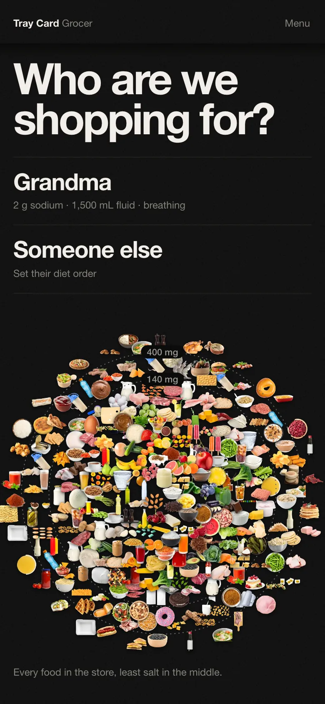
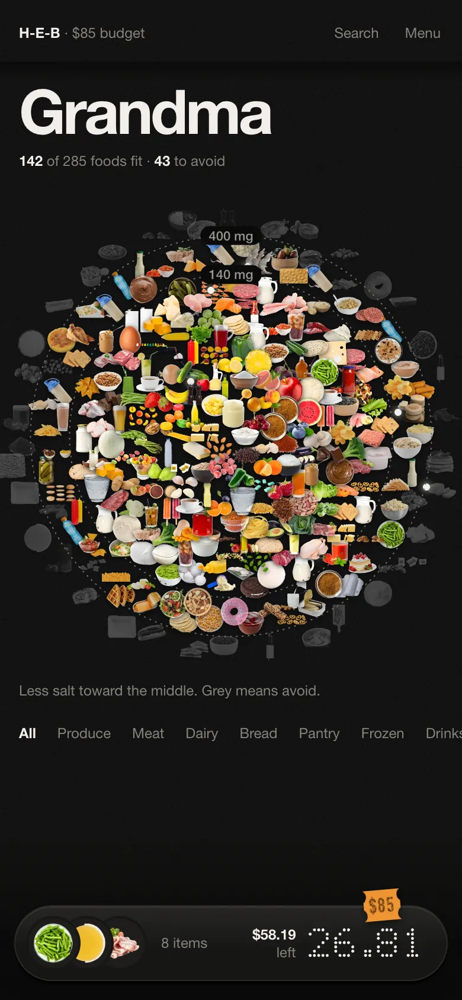
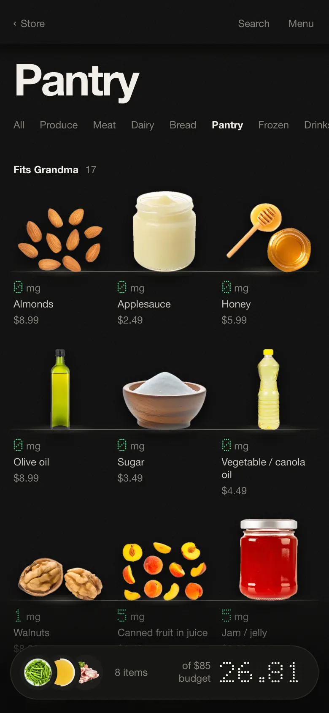
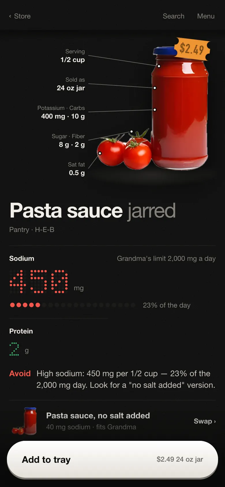
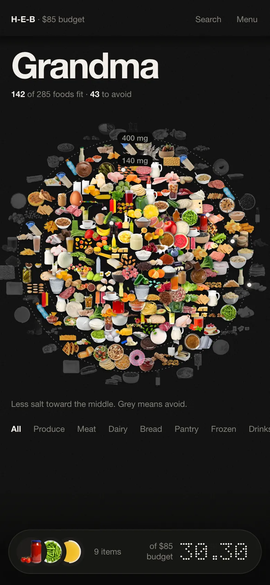
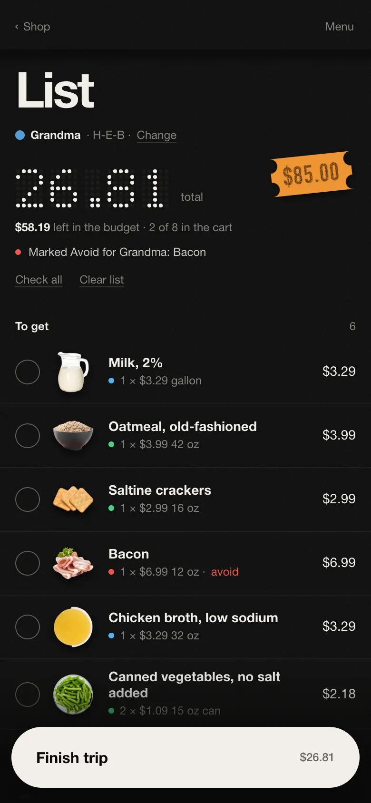
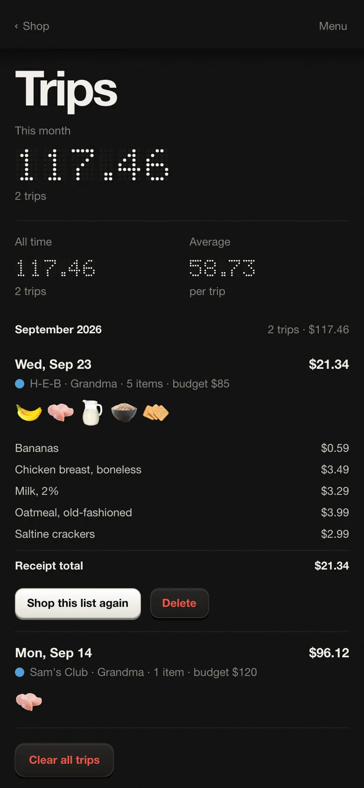
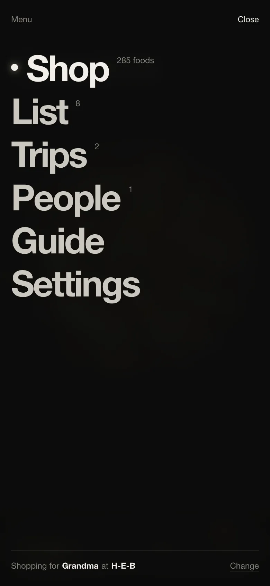

It's a website, not something to install — nothing to download, no account. Put it on your Home Screen so it opens like an app, then tell it who you're shopping for.
Open Tray Card Grocer›Do this once, in Safari on your iPhone.
It's the square with the arrow at the bottom of the screen.
It's a little way down the list, under the row of app icons.
The Tray Card icon appears next to your other apps. Tap it any time — your list is right where you left it.
The first time it opens it asks two things: who you're shopping for, and where.
Tap Grandma to start with a 2 g sodium · 1,500 mL fluid · breathing diet order, or Someone else to set your own. Then find your store: type its name with a ZIP code or city — like “Kroger 77004” or “Ralphs Los Angeles” — or tap Near me, and tap it. Big chains fill the shelves with their own products and label numbers; any other store starts with general photos.

Every food the store carries. The ones that fit best sit in the middle, and a dark ring opens at 140 mg and again at 400 mg of sodium. Grey means avoid. Tap any food to open it — or hold your finger down and slide to see what's under it first. The aisles are listed under the picture. The top line shows the store and the budget; tap it to change the person, store or budget.

Each product stands on a lit shelf with its label under it: the lit number is the sodium in one serving — or, for drinks that count toward the day's fluids, how many mL — then the name and the price. Foods that fit come first, then small amounts, then avoid (Hide tucks those away).

It comes forward onto its own stage, with the serving, the package size and the other nutrients written beside it — each with a line pointing at the food. The big number is the sodium in one serving, and the dots under it show how much of the day that uses. The line under it says why, in plain words. When there's a better version — like a “no salt added” can — it shows up under Swap. The orange label is the price: tap it to fix the price for your store. Holding the real thing? Scan the package puts that product — its picture and its label numbers — on this store's shelf.

Add to tray drops the food into the tray at the bottom and takes you back where you were. The tray shows the newest things you picked, what's left of the budget and the running total. The orange label on the tray is the budget — tap it to change it. Tap the tray itself to open the list.

Tap the circle as each thing goes in the cart — it slides down under In the cart. Tap a row for − and +, Change price, See product or Remove. Check all stays pressed down while everything is in the cart. The orange label is the budget; the lit number is the total.

Tap Finish trip, type the receipt total, and it's saved under Trips — what you bought, where, and what it cost. Shop this list again puts a past trip back on the list in one tap.

People gives each person their own diet order, list and trips. Guide says what to check on the real label. Settings has your stores, foods you add yourself, Night or Day, and the backup.

Grandma's diet order, your lists and your trips are saved inside your own phone's browser. Nobody else who opens the same link sees them — not even the person who sent it to you. If you open the link on a second phone or computer, it starts blank there.
Under Menu → Settings → Back up you can save a small file with everything in it. If you ever get a new phone, open the app there and use Restore from a backup.
Nutrition numbers are typical label values for a generic version of each food and standard hospital diet rules. It's a shopping aid, not medical advice — the doctor or dietitian sets the real limits.